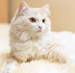
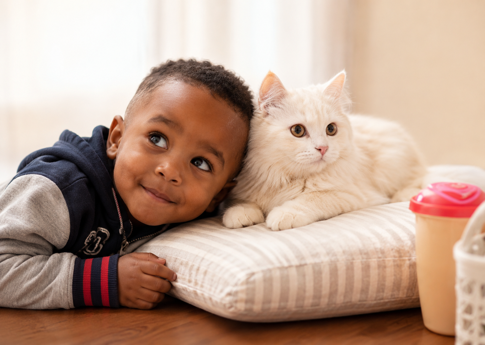

A Little Cat, Cat, Cat
Learn more about the song, "A Little Cat, Cat, Cat" which I sing to my brother every night before he goes to bed.
Raising my younger brother Duke alongside my cat Mimi taught me something special: pets and toddlers have more in common than we think. They are both full of curiosity, personality, and endless surprises. Through their adventures, I learned patience, responsibility, and the joy of caring for others. If you love cats, pets, or heartwarming stories, you're in the right place!

Meet Mimi, the fluffy queen of the house whose gentle personality melts everyone's heart. Whether she's lounging in her favorite spot or curiously watching the world around her, Mimi brings warmth and comfort wherever she goes. Her soft fur and calm presence make every day a little brighter.
Duke is a bundle of energy, curiosity, and endless smiles. Always ready for his next adventure, he fills every room with excitement and joy. His playful spirit and cheerful personality make him the star of every family gathering.

When Duke and Mimi are together, it's a heartwarming friendship full of love and companionship. Duke's playful energy perfectly complements Mimi's gentle and calming nature. Their special bond creates unforgettable moments that bring smiles to everyone who sees them together.
Learn more about the song, "A Little Cat, Cat, Cat" which I sing to my brother every night before he goes to bed.